Bellevue — In Post-Production (2026)
Documentary | Director of Photography
A short film examining identity and multiculturalism through the lens of a racially-diverse football club in Wrexham.
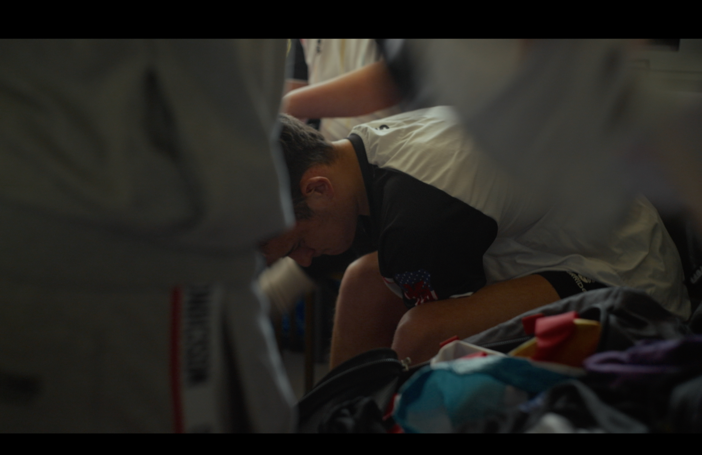
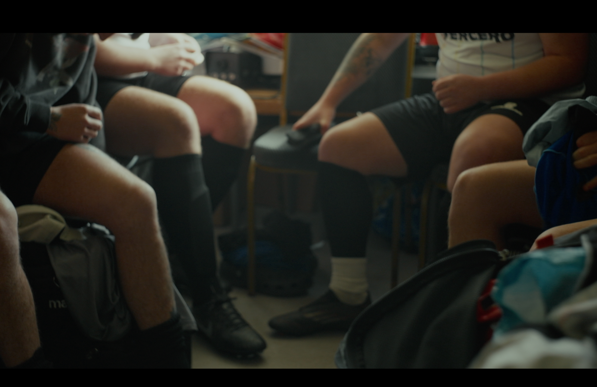


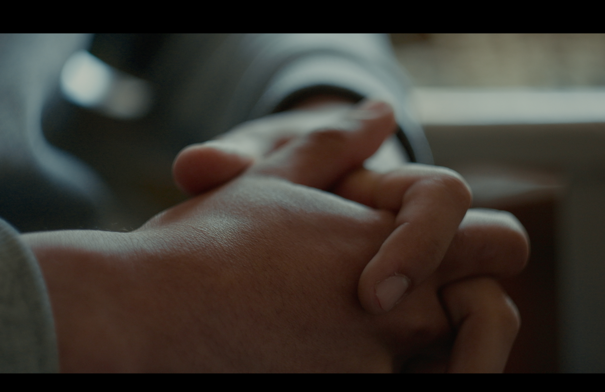
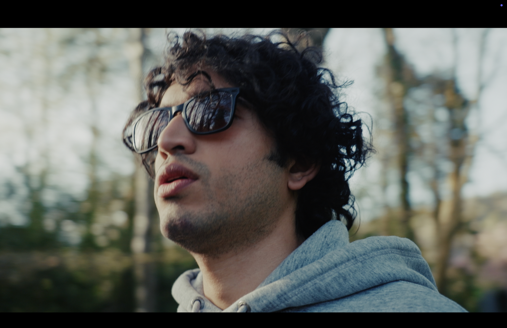
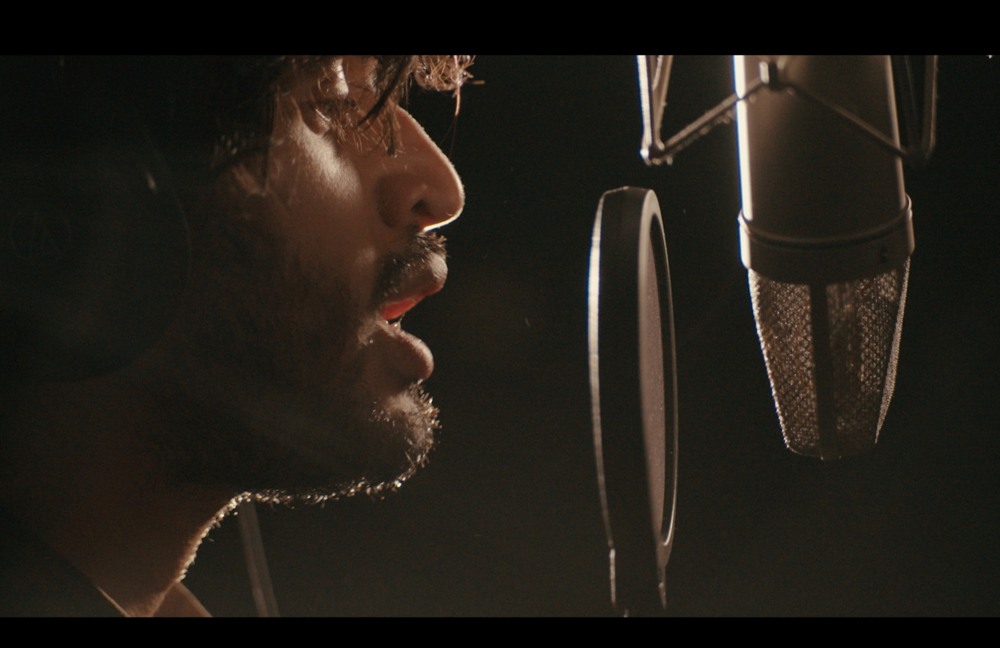
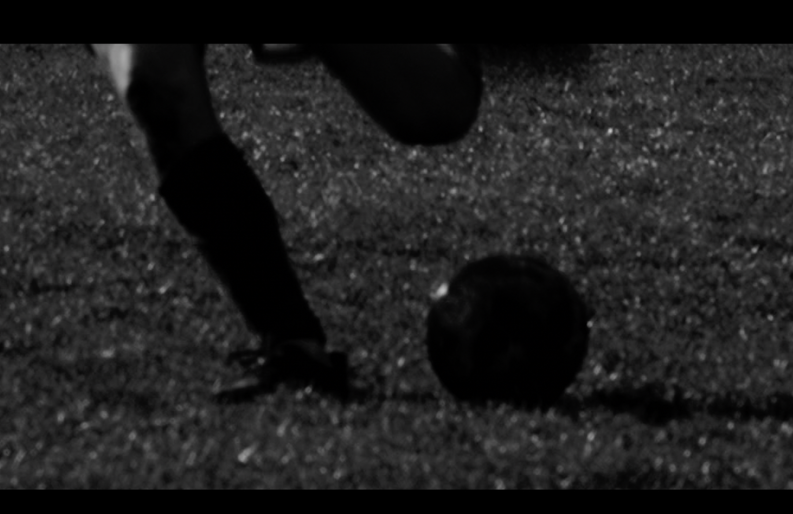
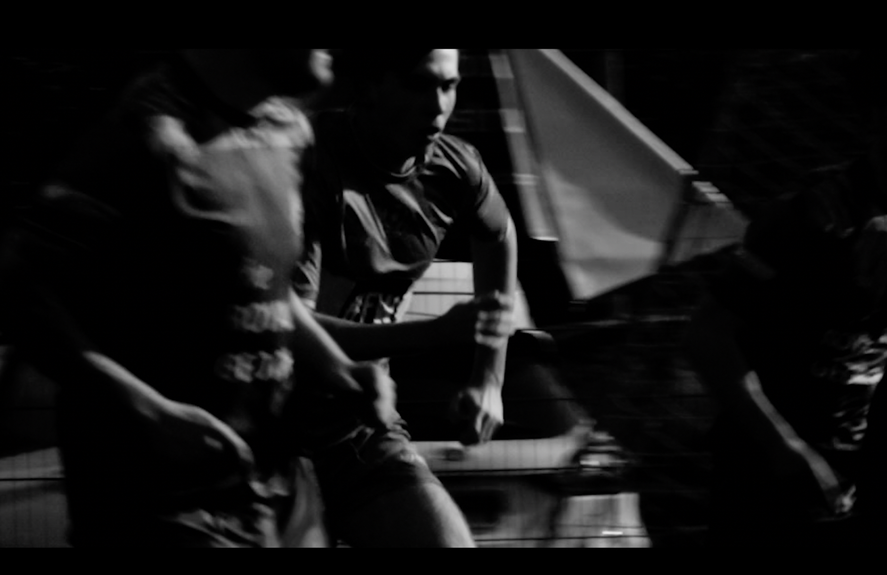
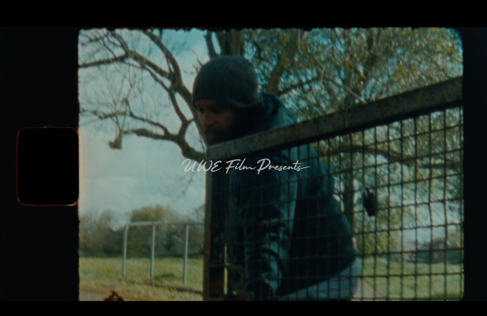
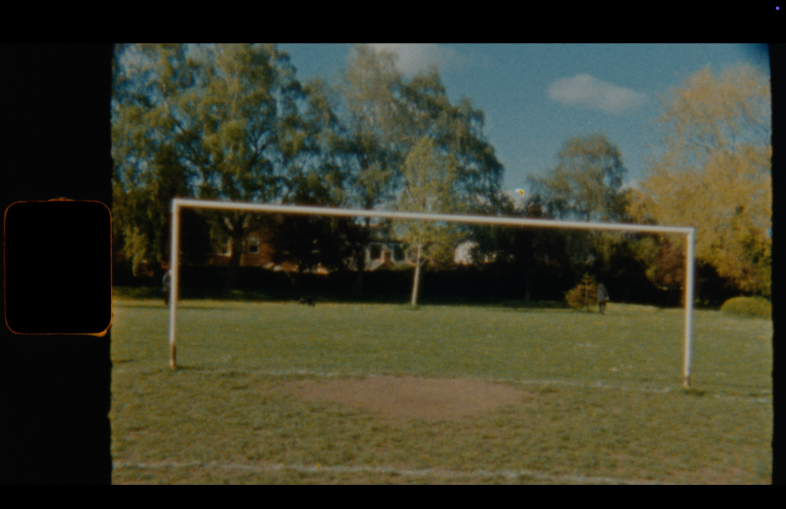
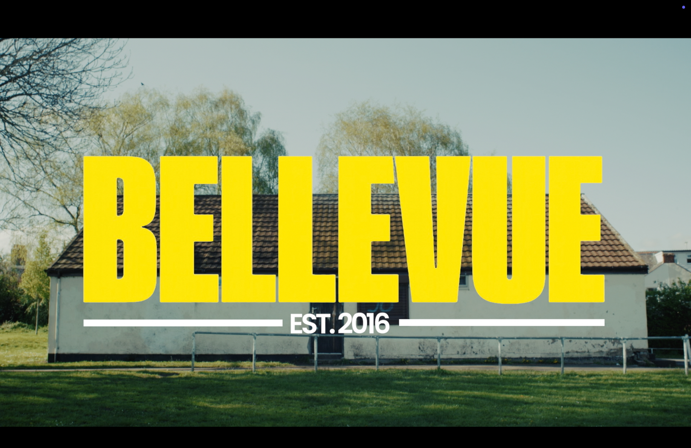

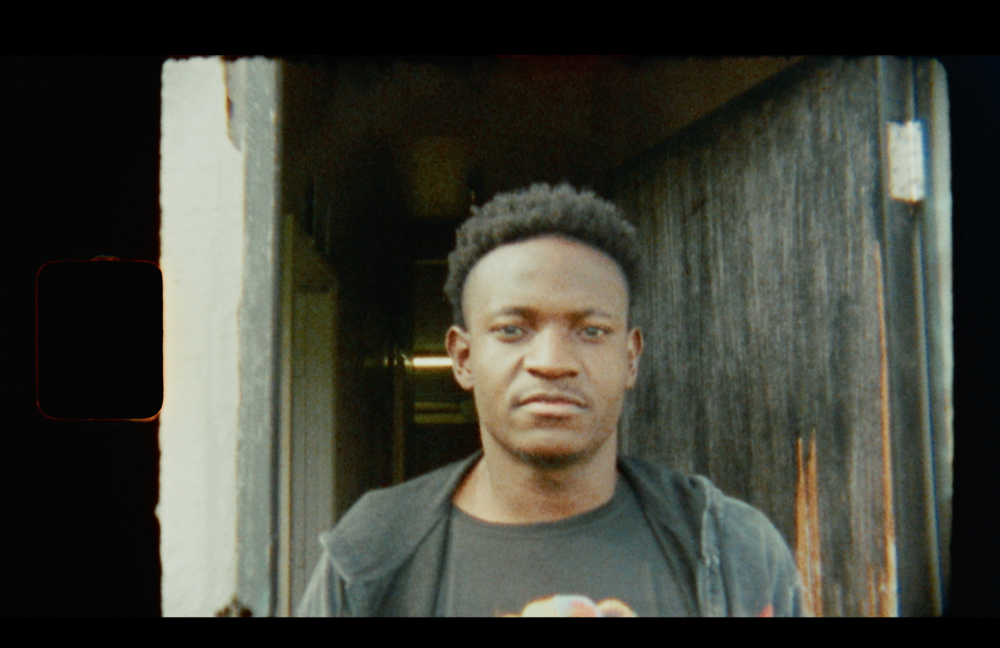
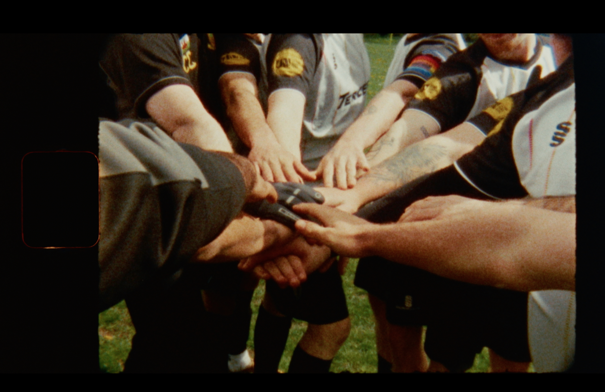
Credits
Director of Photography: Johnny Austen-Jones